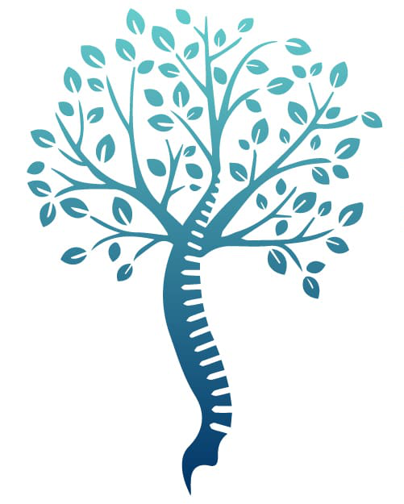

L'articulation sacro-iliaque (SI) relie le sacrum (l'os triangulaire à la base de la colonne vertébrale) à l'os iliaque (le bassin). Vous en avez deux, une de chaque côté. Contrairement aux hanches ou aux genoux, cette articulation est conçue pour très peu bouger : son rôle principal est d'absorber les chocs et de transférer le poids du haut du corps vers les jambes.
La dysfonction de l'articulation sacro-iliaque est une cause majeure (et souvent sous-diagnostiquée) de douleurs lombaires chroniques. Elle peut être causée par :
La douleur sacro-iliaque est souvent confondue avec une hernie discale. Elle se manifeste par :
Les radiographies ou IRM sont souvent normales. Le diagnostic repose sur un test d'infiltration anesthésique. Un radiologue injecte un anesthésique local directement dans l'articulation sacro-iliaque. Si votre douleur disparaît presque totalement (d'au moins 75 %) pendant quelques heures, le diagnostic de dysfonction sacro-iliaque est confirmé de façon certaine.
La chirurgie n'est proposée qu'après échec de ces traitements sur une période d'au moins 6 mois :
Le but de l'opération est de bloquer (fusionner) définitivement l'os iliaque et le sacrum ensemble pour supprimer les micro-mouvements douloureux de l'articulation. L'opération ne modifiera pas votre façon de marcher ou de vous asseoir, car cette articulation n'est pas censée être mobile au départ.
Historiquement, cette opération nécessitait de grandes incisions, des plaques et une longue convalescence. Aujourd'hui, nous utilisons une technique percutanée mini-invasive (comme le système SI-BONE iFuse).
Les études cliniques démontrent une amélioration très significative (souvent plus de 80 %) de la douleur fessière et lombaire, ainsi qu'un retour à une fonction normale pour les patients correctement sélectionnés par le test anesthésique.
Cette approche mini-invasive limite grandement les risques, mais toute chirurgie en comporte :
L'intervention dure environ 45 minutes à 1 heure. L'hospitalisation est extrêmement courte : elle se fait le plus souvent en ambulatoire (sortie le soir même) ou nécessite au maximum une nuit de surveillance.
| Activité | Délai approximatif | Conditions |
|---|---|---|
| Marche avec béquilles | Dès J+0 | Appui partiel selon prescription (souvent 3 à 4 sem). |
| Position assise | Immédiatement | Peut être douloureuse sur la fesse opérée (utiliser un coussin doux). Ne restez pas assis plus de 45 min sans bouger. |
| Conduite automobile | 3 à 6 semaines | Après l'abandon des béquilles et l'arrêt des anti-douleurs forts. |
| Arrêt de travail | 4 à 12 semaines | Dépend fortement de la pénibilité physique de votre métier. |
| Kinésithérapie | Vers 6 semaines | Après la consolidation osseuse de base (reprise de la marche normale, étirements, gainage). |
| Sport (Natation, vélo) | 6 à 8 semaines | Sports doux et dans l'axe. |
| Sports d'impact (course) | 3 à 6 mois | Accord du chirurgien nécessaire. |
La hernie pince un nerf dans la colonne lombaire, provoquant une sciatique qui descend souvent jusqu'au pied. La douleur sacro-iliaque vient de l'articulation du bassin. Elle se concentre dans le bas du dos, la fesse, parfois l'aine, et descend rarement plus bas que le genou.
Oui, l'incision traversant le muscle fessier (gluteus), la zone sera très sensible (comme un gros hématome ou une "béquille" musculaire). Cependant, la douleur mécanique articulaire "profonde" que vous aviez avant l'opération est souvent soulagée très rapidement.
Contrairement à la chirurgie lombaire, l'arthrodèse sacro-iliaque nécessite de soulager l'articulation opérée. Une décharge partielle avec deux béquilles ou un déambulateur est souvent recommandée pendant 3 à 4 semaines pour permettre à l'os de fusionner avec les implants.
S'asseoir peut être inconfortable les premières semaines en raison de l'incision située sur le côté de la fesse et de la pression sur le bassin. Privilégiez des chaises fermes, asseyez-vous sur la fesse saine au début, et évitez les canapés profonds. L'utilisation d'un coussin peut aider.
Il est conseillé de dormir sur le dos ou sur le côté "sain" (non opéré) avec un coussin épais entre les genoux pour garder votre bassin parfaitement aligné et éviter toute tension sur l'articulation opérée.
C'est techniquement possible, mais souvent déconseillé. Opérer les deux côtés imposerait une période de fauteuil roulant, car l'appui partiel serait impossible des deux côtés en même temps. On opère généralement un côté, puis l'autre quelques mois plus tard si nécessaire.
Non. Les implants sont conçus pour rester à vie. Ils s'intègrent définitivement dans votre os.
Non. Le titane de qualité médicale utilisé pour les implants est non magnétique et d'une masse trop faible pour déclencher les détecteurs de sécurité des aéroports.
Oui, absolument. Les implants en titane sont compatibles avec l'IRM. Ils peuvent générer un petit "flou" localisé sur les images autour de l'implant, mais ne sont pas dangereux.
Non. L'articulation sacro-iliaque ne bouge naturellement que de 2 à 4 degrés maximum. Fusionner cette articulation ne modifie ni votre démarche, ni votre souplesse pour vous pencher en avant.
Le rejet au sens "allergique" est exceptionnel. Le titane est le matériau le plus biocompatible connu. Le véritable risque n'est pas le rejet, mais l'absence de fusion osseuse (pseudarthrose), particulièrement si vous fumez.
Pas avant d'avoir abandonné vos béquilles et sevré les médicaments antalgiques forts (généralement 3 à 4 semaines). Vous devez pouvoir freiner brutalement avec la jambe du côté opéré sans aucune douleur.
En marchant avec des béquilles et en soulageant la fesse opérée, votre corps compense de manière asymétrique. Il est très fréquent de développer des douleurs musculaires de compensation sur la jambe saine ou dans le haut du dos. Cela disparaîtra lors de la reprise d'une marche normale.
La natation et le vélo d'appartement peuvent être repris vers 6 semaines. Les sports générant des torsions du bassin (tennis, golf, course à pied) demandent une intégration osseuse solide et ne sont pas autorisés avant 3 à 6 mois.
Elle guérit la douleur provenant de l'articulation sacro-iliaque. Cependant, beaucoup de patients ont une "maladie combinée" (arthrose sacro-iliaque ET arthrose des disques lombaires). Les douleurs purement lombaires ne disparaîtront pas avec cette chirurgie.
J'atteste avoir reçu cette fiche d'information et en avoir pris connaissance. J'ai compris la nature de l'intervention (arthrodèse sacro-iliaque mini-invasive type iFuse), l'impératif de la décharge partielle (béquilles) pour protéger les implants, l'obligation stricte d'arrêt du tabac pour permettre la fusion osseuse, ainsi que les risques de complications neurologiques transitoires et de douleurs de compensation liées à la rééducation.
Date :
Nom et prénom du patient : ________________________________
Signature du patient : ________________________________